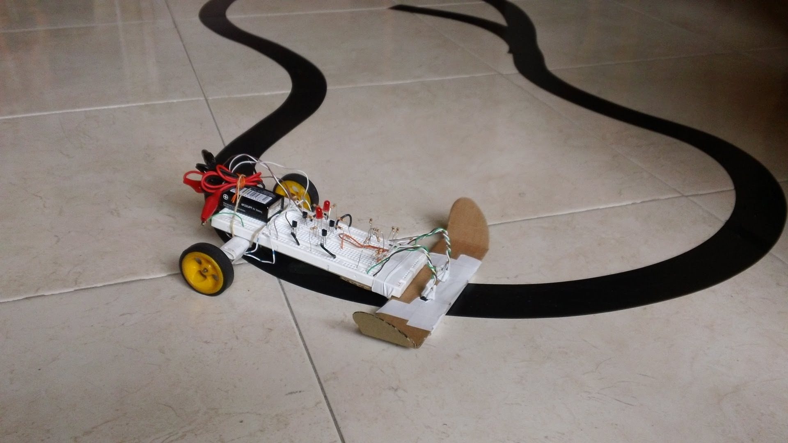
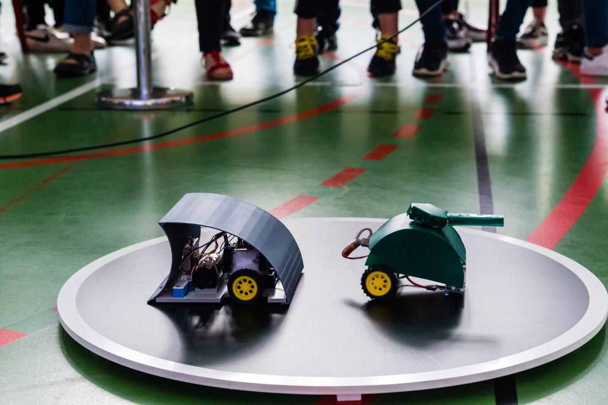
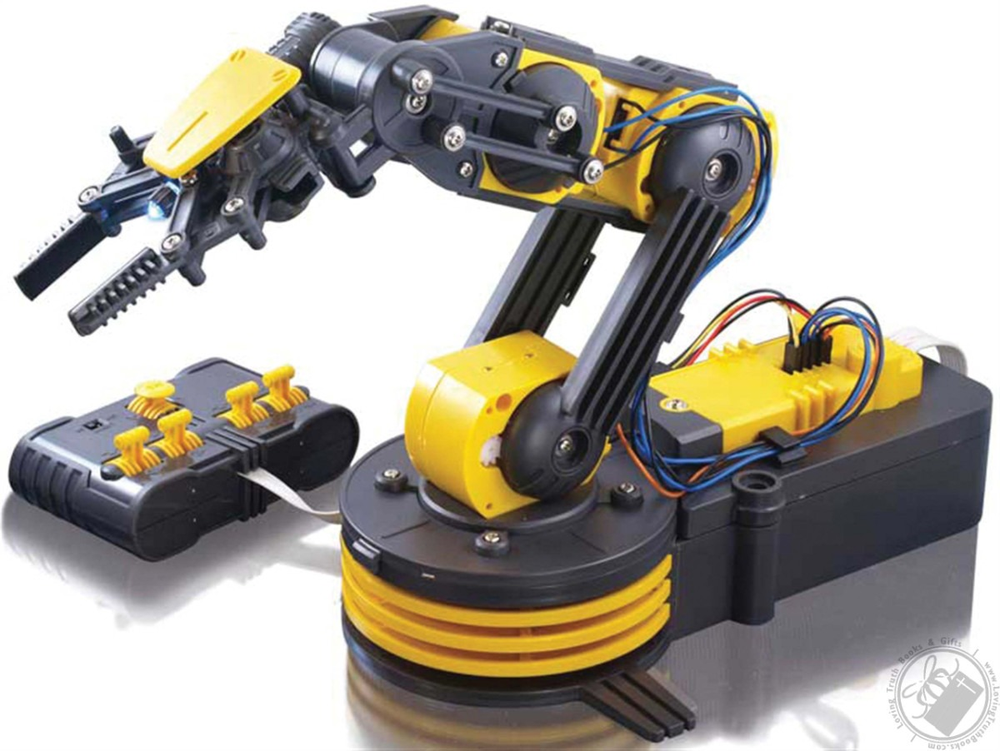
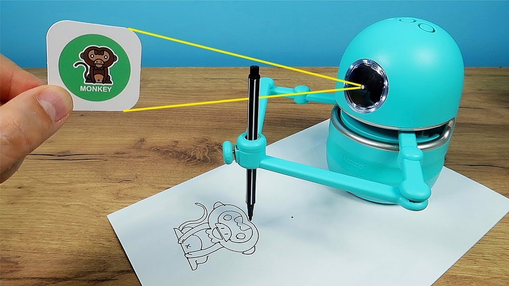
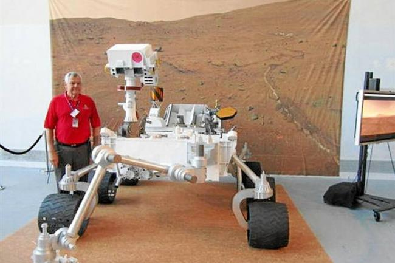
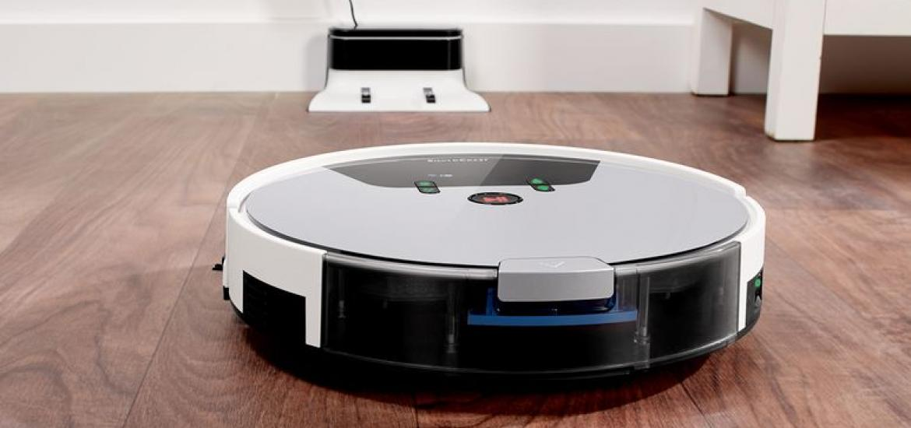
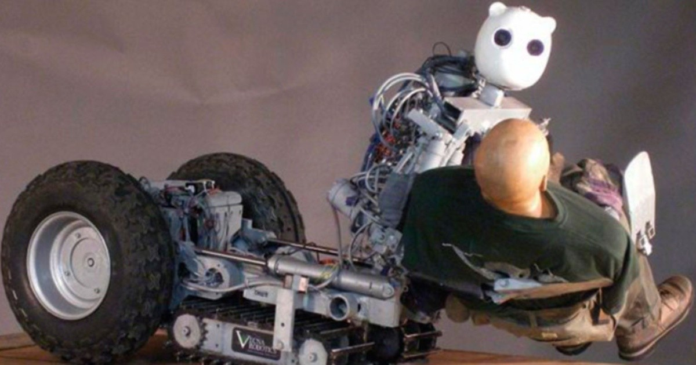
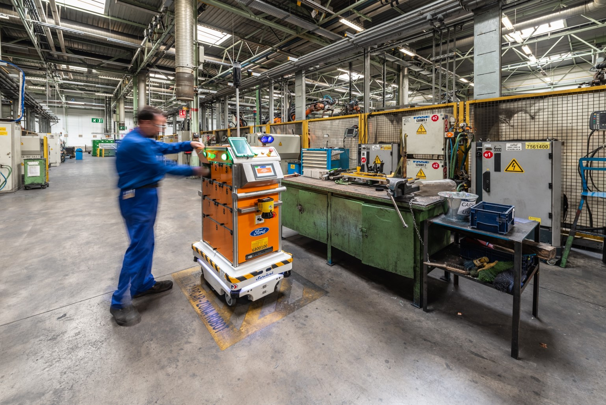

El robot seguidor de línea es un tipo de robot autónomo que se mueve siguiendo una línea dibujada en una superficie. Utiliza sensores para detectar la línea y ajustar su movimiento en consecuencia. Aquí hay algunos pasos generales para construir un robot seguidor de línea: Selecciona tus componentes: para construir un robot seguidor de línea necesitarás una placa controladora, motores, ruedas, sensores de línea y una batería. Diseña el chasis del robot: El chasis del robot es la estructura que soporta los componentes. Puedes utilizar materiales como plástico, madera o metal para construir el chasis. Asegúrate de que sea lo suficientemente resistente para soportar el peso de los componentes. Monta los componentes: Una vez que tengas el chasis, comienza a montar los componentes. Coloca los motores y las ruedas en la parte inferior del chasis, y la placa controladora en la parte superior. Conecta los sensores de línea a la placa controladora. Programa el robot: Programa el robot para que pueda seguir la línea. Puedes utilizar lenguajes de programación como Arduino o Python. El código debe incluir la lógica necesaria para que el robot siga la línea, ajustando la velocidad y dirección de los motores en función de la posición de los sensores. Prueba el robot: Una vez que hayas terminado de construir y programar el robot, es hora de probarlo. Colócalo sobre una línea y asegúrate de que pueda seguir la línea correctamente.
para construir un robot sumo haz lo siguiente:Materiales necesarios: 2 motores 1 chasis 1 placa controladora 1 batería Sensores de proximidad infrarrojos Ruedas y neumáticos Cables Paso 1: Diseña el chasis del robot. Puedes usar materiales como cartón, plástico o madera. Asegúrate de que tenga suficiente espacio para colocar los motores y la placa controladora. Paso 2: Instala los motores en el chasis y conecta los cables a la placa controladora. Asegúrate de que los motores estén en la dirección correcta y funcionen correctamente. Paso 3: Agrega las ruedas y los neumáticos a los motores. Paso 4: Conecta los sensores de proximidad infrarrojos a la placa controladora. Estos sensores ayudarán al robot a detectar la ubicación de su oponente. Paso 5: Carga el código de control en la placa controladora. El código controlará el comportamiento del robot. Paso 6: Prueba el robot sumo. Colócalo en el área de juego y observa cómo reacciona a su oponente. Realiza ajustes en el código si es necesario. Con estos pasos básicos, podrás construir tu propio robot sumo. Puedes ajustar el diseño y los componentes para adaptarlos a tus necesidades y objetivos específicos. ¡Diviértete construyendo y compitiendo!
Materiales necesarios: Piezas de madera contrachapada (4 piezas de 60 cm x 30 cm, 1 pieza de 30 cm x 30 cm, 1 pieza de 10 cm x 30 cm) Servomotores (4 servomotores para las articulaciones, 1 servomotor para el giro de la base) Cables y conectores para los servomotores Arduino UNO o similar Protoboard Jumpers Adaptador de corriente para el Arduino y los servomotores Pinzas de corte Destornilladores Soldador y estaño Pasos: Diseño: Lo primero que debes hacer es diseñar tu brazo robótico. Utiliza un software de diseño 3D como Tinkercad o Fusion 360 para crear el modelo en tres dimensiones y asegurarte de que todas las piezas encajen correctamente. También puedes encontrar diseños ya hechos en internet y descargar los planos. Corte: Una vez que tengas los planos de las piezas, transfierelas a la madera contrachapada y córtalas con una sierra de calar o una sierra eléctrica. Asegúrate de cortar las piezas con precisión para que encajen correctamente. Ensamblaje: Una vez que hayas cortado todas las piezas, ensámblalas utilizando tornillos y pegamento de madera. El brazo robótico consta de una base, un brazo superior, un brazo inferior y una pinza. Coloca los servomotores en sus lugares y conecta los cables a la placa de prototipos (protoboard) junto con el Arduino. Programación: Para programar el brazo robótico, necesitas un software de programación como Arduino IDE. Utiliza la librería Servo.h para controlar los servomotores y programar el movimiento del brazo. Puedes encontrar tutoriales y ejemplos de código en internet para ayudarte en este proceso. Prueba y ajuste: Una vez que hayas programado el brazo robótico, prueba su funcionamiento. Ajusta los movimientos y la velocidad de los servomotores según sea necesario. ¡Listo! Con estos pasos básicos ya podrías construir tu propio brazo robótico. Recuerda que esta es una guía general, y que los detalles específicos del diseño y la programación pueden variar dependiendo del modelo que quieras construir.
Materiales: Placa de desarrollo Arduino Módulo de reconocimiento de voz Micro servo motor L293D Motor Shield Cableado y soldadura Batería de 9V Pasos: En primer lugar, conecta el módulo de reconocimiento de voz al Arduino. Este módulo suele tener 4 pines, VCC, GND, RX y TX. Conéctalo de la siguiente manera: VCC al pin 5V de Arduino, GND al pin GND de Arduino, RX al pin digital 0 de Arduino y TX al pin digital 1 de Arduino. Conecta el micro servo motor al Arduino utilizando el L293D Motor Shield. El micro servo motor se conectará a los pines 9 y 10 de Arduino y el L293D Motor Shield se conectará a los pines digitales 2, 3, 4 y 5 de Arduino. Programa el Arduino para que detecte la voz. Puedes utilizar bibliotecas de voz, como la biblioteca EasyVR. Una vez que el Arduino detecte la voz, programa el movimiento del micro servo motor. Por ejemplo, si el usuario dice "izquierda", el micro servo motor deberá moverse en una dirección determinada. Conecta una batería de 9V al Arduino y enciende el sistema. ¡Tu robot controlado por voz debería estar listo para funcionar!
Materiales: Placa Arduino Sensor de movimiento MPU-6050 2 motores de corriente continua Batería de 9V Cableado Chasis de robot Pasos: Conecta la placa Arduino al sensor de movimiento MPU-6050. Este sensor mide la inclinación y el movimiento del robot. Conecta los motores de corriente continua a la placa Arduino. Los motores se encargan de mover el robot en función de los movimientos detectados por el sensor. Crea un programa en la placa Arduino que permita al robot detectar y responder a los gestos. Carga el programa en la placa Arduino y enciende el robot. Realiza algunos gestos, como inclinaciones o movimientos de la mano, para que el robot los detecte y responda. Prueba el robot en diferentes entornos y ajusta el programa según sea necesario.
Materiales necesarios: Plataforma robótica Motores y controladores Lápiz o pincel Sujetador de lápiz o pincel Fuente de alimentación Arduino u otro microcontrolador Sensores de posición o movimiento Cableado y conectores Pasos a seguir: Comienza por obtener una plataforma robótica que pueda moverse con precisión. Esto puede ser una plataforma de control remoto o una plataforma construida desde cero. Asegúrate de que sea lo suficientemente grande como para sostener el lápiz o pincel y se mueva suavemente. Agrega motores y controladores a la plataforma robótica. El número de motores dependerá del tipo de movimiento que desees realizar. Por ejemplo, si deseas que el robot dibuje líneas rectas, necesitarás al menos dos motores para el movimiento X e Y. Agrega un sujetador de lápiz o pincel a la plataforma. Puedes usar una pinza, un soporte de clips o cualquier otro soporte que sostenga el lápiz o pincel de forma segura y que sea fácil de fijar en la plataforma robótica. Conecta los motores y el sujetador de lápiz o pincel al Arduino u otro microcontrolador. Puedes usar un puente H o un controlador de motor para asegurar que los motores reciban la potencia y el voltaje adecuados. Agrega sensores de posición o movimiento para asegurarte de que el robot se mueva con precisión. Los sensores pueden ser interruptores finales, potenciómetros, sensores de proximidad o cualquier otro sensor que pueda detectar la posición y el movimiento del robot. Programa el microcontrolador para controlar los motores y los sensores. Puedes usar un lenguaje de programación como C++ o Python para escribir el código y controlar los movimientos del robot. Prueba y ajusta el robot para asegurarte de que se mueva correctamente y dibuje o pinte según lo deseado. Realiza cambios en el código o en la mecánica si es necesario.
a hacer un robot explorador, necesitarás los siguientes materiales: Placa de control (como Arduino) Chasis de robot (puedes comprar uno o construir uno a partir de piezas de Lego o materiales similares) Motores y ruedas para el movimiento Batería recargable Sensor de distancia (como un sensor ultrasónico o infrarrojo) Placa de expansión para agregar más puertos y conectividad Cables y herramientas de soldadura Una vez que tengas los materiales, puedes seguir estos pasos para construir el robot explorador: Construye el chasis del robot. Si lo estás construyendo con piezas de Lego, sigue las instrucciones del kit. Si estás construyendo tu propio chasis, asegúrate de que tenga espacio para los motores y las ruedas, la batería y la placa de control. Instala los motores y las ruedas en el chasis. Asegúrate de que estén bien sujetos. Conecta los motores a la placa de control. Utiliza cables y soldadura si es necesario. Conecta el sensor de distancia a la placa de control. De nuevo, utiliza cables y soldadura si es necesario. Conecta la batería a la placa de control. Asegúrate de que la batería esté completamente cargada antes de continuar. Carga un programa en la placa de control que le permita al robot explorador moverse y evitar obstáculos. Si no sabes programar, puedes buscar un tutorial en línea o utilizar una biblioteca de código existente. Prueba el robot explorador en un entorno seguro y controlado. Ajusta el programa según sea necesario para mejorar su rendimiento.
Materiales: Chasis o base para el robot Motores y ruedas Sensores de proximidad Batería y cargador Microcontrolador (Arduino u otro) Herramientas (destornillador, cortador de alambre, etc.) Componentes adicionales (opcional): cepillos, depósito de agua, bomba de agua, etc. Pasos: Diseña y construye el chasis o base para el robot. Debe ser lo suficientemente grande y estable como para sostener los componentes adicionales y realizar tareas de limpieza. Instala los motores y ruedas en el chasis. Asegúrate de que estén firmemente sujetos y que las ruedas puedan girar libremente. Instala los sensores de proximidad en el chasis. Estos sensores permiten al robot detectar obstáculos y evitar colisiones. Conecta los motores, sensores y otros componentes al microcontrolador. Utiliza el lenguaje de programación adecuado para programar el microcontrolador para controlar el movimiento y la detección de obstáculos del robot. Añade componentes adicionales como cepillos, depósito de agua, bomba de agua, etc., según las necesidades de tu robot de limpieza. Instala la batería y el cargador para asegurarte de que tu robot tenga suficiente energía para funcionar durante un período de tiempo adecuado. Prueba tu robot de limpieza en diferentes superficies y entornos para asegurarte de que funciona correctamente.
La construcción de un robot de rescate puede ser un proyecto complicado, ya que involucra la integración de diferentes componentes y sistemas. Aquí hay una guía general de los pasos a seguir para construir un robot de rescate: Planificación: Antes de comenzar la construcción, es importante planificar el diseño y las funciones del robot. Debes considerar los requisitos de la misión de rescate y seleccionar los componentes necesarios. Chasis: El chasis es la estructura principal del robot y debe ser lo suficientemente resistente para soportar el peso de los componentes y las condiciones de la misión. Puedes construir el chasis utilizando materiales como aluminio, acero o plástico. Sistema de control: El sistema de control es esencial para el funcionamiento del robot. Puedes utilizar una placa de control como Arduino o Raspberry Pi para controlar los movimientos del robot y recopilar datos de los sensores. Sensores: Los sensores son necesarios para detectar el entorno y proporcionar información al sistema de control. Los sensores comunes utilizados en robots de rescate incluyen cámaras, sensores ultrasónicos, sensores infrarrojos y sensores de contacto. Actuadores: Los actuadores son necesarios para realizar acciones físicas como el movimiento de los brazos, piernas y la apertura de puertas. Los motores y servomotores son ejemplos de actuadores comunes utilizados en robots de rescate. Fuente de energía: La fuente de energía es importante para el funcionamiento del robot. Puedes utilizar baterías recargables o paneles solares para alimentar el robot. Pruebas y ajustes: Una vez que hayas construido el robot, es importante realizar pruebas y ajustes para garantizar que el robot esté funcionando correctamente. Deberás probar cada componente individualmente y luego realizar pruebas integrales. Integración: Después de las pruebas y ajustes, deberás integrar los componentes y asegurarte de que funcionen juntos correctamente.
Materiales: Plataforma móvil (puede ser un chasis o una base) Ruedas o motores para la plataforma Sensores de proximidad o distancia (para detectar obstáculos) Brazos robóticos (para recoger y colocar materiales) Actuadores (para mover los brazos robóticos) Microcontrolador (para controlar el robot) Fuente de alimentación (para alimentar el robot) Pasos: Diseña y construye la plataforma móvil. Puede ser un chasis o una base con ruedas o motores que le permitan moverse de forma autónoma. Asegúrate de que la plataforma pueda soportar el peso de los materiales que se van a transportar. Instala los sensores de proximidad o distancia en la plataforma. Estos sensores ayudarán al robot a detectar obstáculos en su camino y a evitar colisiones. Diseña y construye los brazos robóticos. Los brazos robóticos son los componentes que recogerán y colocarán los materiales en su destino. Asegúrate de que los brazos sean lo suficientemente resistentes y precisos para manejar los materiales que se van a transportar. Conecta los actuadores a los brazos robóticos. Los actuadores son los componentes que moverán los brazos robóticos para recoger y colocar los materiales. Asegúrate de que los actuadores sean lo suficientemente fuertes y precisos para manejar los brazos robóticos y los materiales. Conecta los brazos robóticos y los actuadores al microcontrolador. El microcontrolador será el cerebro del robot y controlará los movimientos de los brazos y de la plataforma. Conecta la fuente de alimentación al robot. Asegúrate de que la fuente de alimentación sea lo suficientemente potente para alimentar todos los componentes del robot. Programa el microcontrolador. Programa el microcontrolador para que el robot pueda moverse de forma autónoma, detectar obstáculos, recoger y colocar materiales en su destino. Realiza pruebas y ajustes. Realiza pruebas para asegurarte de que el robot funciona correctamente y ajusta cualquier problema que puedas encontrar.
